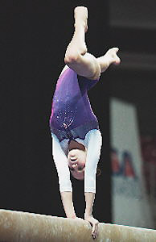

Carly Patterson (USA)
2004 Olympic AA Gold Medalist
2003 World AA Silver Medalist

Medal Total
Olympic Games: 1
Gold, 2 Silver
World Championships: 1 Gold, 1 Silver
Carly was born on February 4, 1988.
Competition Results
2000
Jr. US Classic "A": 3rd AA
Top Gym Tournament: 2nd AA
2001
American Team Cup: 1st Team, 1st AA
Goodwill Games: 7th AA, 5th B
JR. US Championships: 3rd AA
Jr. US Classic "A": 1st AA
Jr. WOGA Classic: 2nd AA
2002
Jr. Gymnix International: 1st AA
Jr. Pacific Alliance Championships: 2nd AA, 1st V, 1st B, 1st FX, 2nd UB
Jr. US Championships: 1st AA
Jr. US Classic "A": 1st AA
Jr. WOGA Classic: 1st AA
Jurassic Classic: 1st AA
2003
American Cup: 1st AA
Parkette Invitational (15-16 yrs.): 1st AA
WOGA Classic: 1st AA
World Championships: 1st Team, 2nd AA
2004
American Cup: 1st AA
Olympic Games: 2nd Team, 1st AA, 2nd B
Pacific Alliance Championships: 2nd AA, 1st B, 1st FX
US Championships: 1st AA
US Olympic Trials: 3rd AA
This page was created on November
24, 2005.
© Gymn Forum